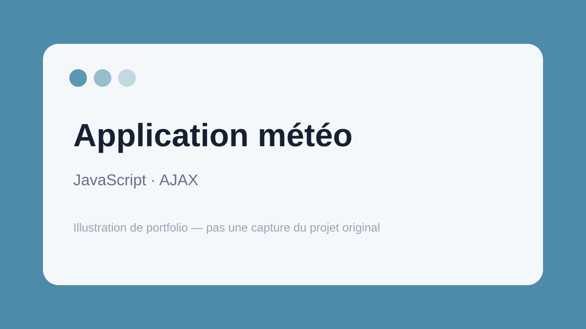

← Retour aux projets
JavaScript / AJAX
Application météo
Exercice pratique autour de la récupération et de l'affichage dynamique de données météo dans une page web.

Ce que ce projet m'a apporté
Ce projet m'a permis de mieux comprendre les échanges de données entre une interface web et une source externe, ainsi que la mise à jour dynamique du contenu côté navigateur.
Les fichiers originaux ne sont plus disponibles. La fiche se concentre sur les compétences réellement travaillées.